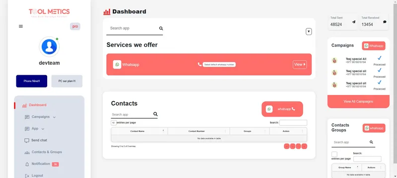
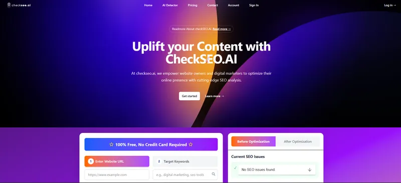
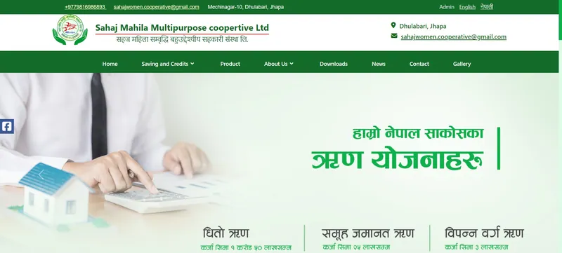
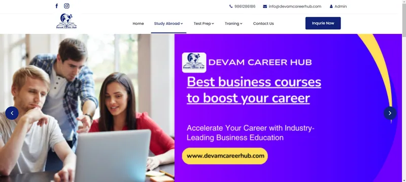
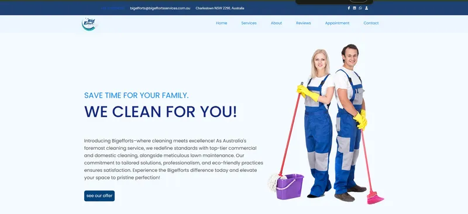

Toolmetics
Business messagingA business messaging platform for reaching customers through bulk WhatsApp messaging.
Backend engineer · Based in Nepal
Thoughtful code. Reliable systems. Built with Python and Django.
I’m a backend developer based in Nepal. From REST APIs to practical AI applications, I turn complex problems into software that’s clear, maintainable, and built to grow.
# A little about how I work
class BackendEngineer:
name = "Anuj Poudel"
toolkit = ["Python", "Django"]
def build(self, idea):
understand(idea)
design_for_clarity()
return ship_and_iterate()Good software starts beneath the surface.
Python / Django / PostgreSQL / Applied AI
Scroll to explore01 — Selected work
Business websites and applications.
From the first idea to the final implementation.

A business messaging platform for reaching customers through bulk WhatsApp messaging.

AI-powered SEO suggestions for articles and websites, using large language models.

A cooperative’s website with a built-in content management system, dynamic pages, and a publishing workflow for news and blogs.

A website for an education and career consultancy, with a visual editor that makes publishing articles straightforward.

A service website for an Australian cleaning business, with dynamic content and an admin panel for managing updates.
02 — The side projects
Detecting license plates in images with YOLOv8, then recognizing characters using a custom CNN trained on the EMNIST dataset.
A supervised learning experiment that uses logistic regression to classify news from its title, author, and text content.
An Android app for Maithili–English translation and live OCR, built during Janakpur Hackathon 2023.
A learning project for storing and retrieving passwords with Python and SQLite. Uses a basic Caesar cipher; intended for experimentation only.
A YouTube-style application exploring how video segmentation works with FFmpeg.
A small file-watching utility that runs a command whenever a file or directory changes, bringing hot reload to a development workflow.
03 — Behind the code
I’m a backend engineer based in Nepal. My work spans e-commerce, education, and enterprise applications, with a focus on clean architecture and software that solves real problems.
Python and Django are at the core of my toolkit. I’m also exploring how machine learning can move from experiments into useful, everyday applications.
I enjoy the details: a well-designed API, a faster database query, and making a complex system easier to understand.
A closer look at my experiencePython · Django · PostgreSQL · Redis · REST APIs
PyTorch · TensorFlow · scikit-learn · NLP · Computer vision
Docker · Kubernetes · AWS · CI/CD · Linux
JavaScript · React · Express.js · HTML & CSS
Have something in mind?
A project, an opportunity, or a good technical conversation.
I’d love to hear from you.